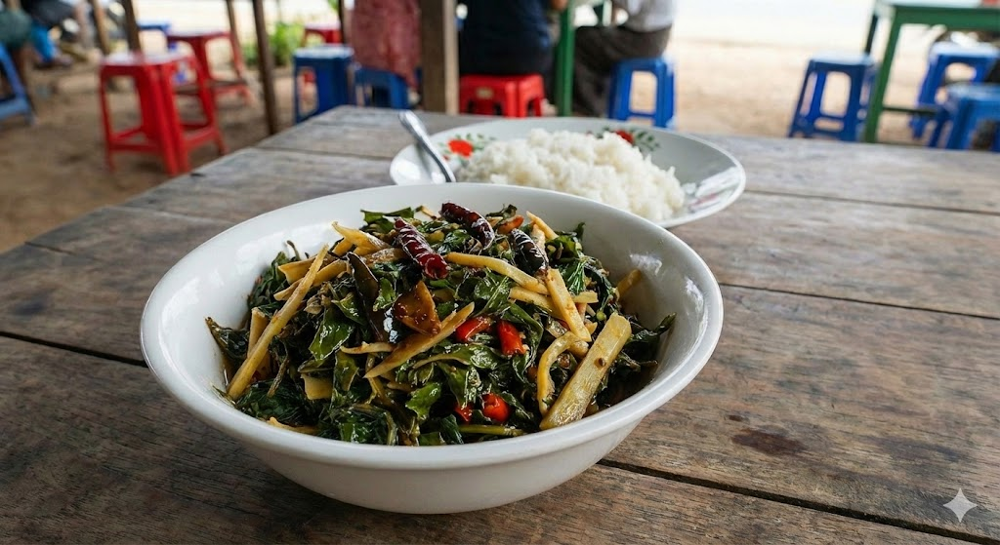
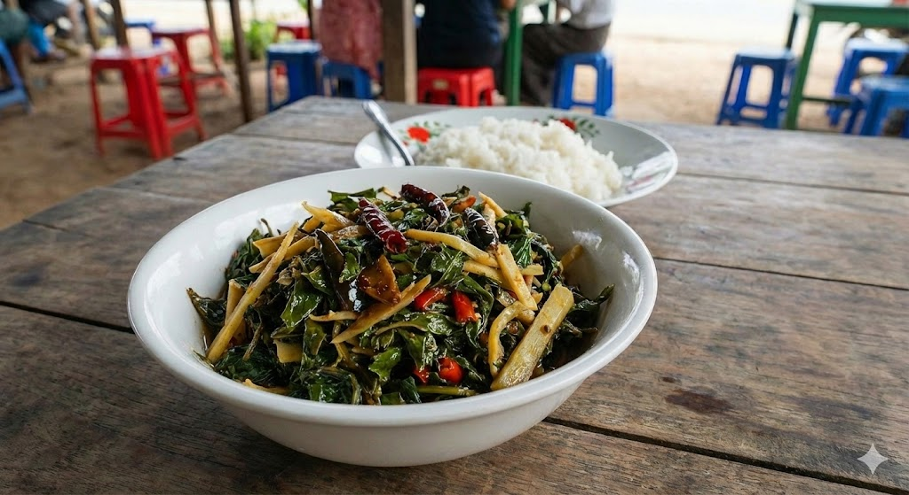

Side Dishes
🎵 Music to Enjoy with This Page
 

Chin Baung Myit Chin Kyaw
Chin Baung Myit Chin Kyaw is a classic Burmese stir-fry known for its appetizing sour and savory flavor. Made with dried roselle leaves, pickled bamboo shoots, and shrimp, this dish is commonly served as a side dish to cleanse the palate and balance rich curries.
Full Recipe
| Prep Time | 20 minutes |
|---|---|
| Cooking Time | 20 minutes |
| Total Time | 40 minutes |
| Servings | 3–4 |
Nutrients per serving (estimated)
| Calories | 160–200 kcal |
|---|---|
| Protein | 8 g |
| Fat | 12 g |
| Carbs | 10 g |
| Fiber | 4 g |
Ingredients
- Dried roselle leaves – a handful
- Dried roselle calyxes – a handful
- Bamboo shoots – desired amount
- Fresh shrimp – about 15 pieces
- Onion – 1 medium, thinly sliced
- Garlic – 5 cloves, sliced
- Crushed chili flakes – 2 tbsp
- Fish sauce – 3 tbsp
- Shrimp paste (ngapi) – 1 tbsp
- Seasoning powder – 1 tsp
- Turmeric powder – ¼ tsp
- Cooking oil – about 15 tbsp
Steps
- Soak dried roselle leaves and calyxes in water for about 3 hours.
- Boil bamboo shoots until tender, then shred into thin strips.
- Clean, peel, and devein the shrimp.
- Heat oil in a pan and add turmeric powder.
- Add sliced onions and chili flakes; fry until fragrant.
- Add shrimp and stir-fry for about 2 minutes.
- Add soaked roselle leaves and stir well.
- Add water to cover ingredients and simmer until leaves soften.
- Add shrimp paste and bamboo shoots; mix well.
- Add fish sauce, seasoning powder, and garlic; stir-fry briefly.
- Taste and adjust seasoning, then serve with steamed rice.
Tomato Chili Sauce
Tomato Chili Sauce is a tangy and spicy tomato-based condiment commonly served as a side dish in Burmese meals. Made with tomatoes, garlic, and chilies, this sauce is versatile and pairs well with rice, noodles, or grilled dishes.
Full Recipe
| Prep Time | 10 minutes |
|---|---|
| Cooking Time | 15–20 minutes |
| Servings | 4 |
Nutrients per serving
| Calories | 50 kcal |
|---|---|
| Protein | 1 g |
| Fat | 2 g |
| Carbs | 8 g |
| Sodium | 300 mg |
Ingredients
- Tomatoes – 3, chopped
- Garlic – 3 cloves, minced
- Red chili – 2, chopped
- Oil – 2 tbsp
- Salt – ½ tsp
- Sugar – 1 tsp
- Fish sauce – 1 tsp
- Dried small shrimps – ½ cup (optional)
Steps
- Heat oil in a pan and sauté garlic and chili until fragrant.
- Add chopped tomatoes and cook until soft and saucy.
- Add sugar, salt, fish sauce, and dried shrimps (if using); simmer for 5–10 minutes.
- Serve warm or at room temperature.
Tea Leaf Salad (Lahpet Thoke)
Tea Leaf Salad is a classic Burmese dish made with fermented tea leaves, mixed with fresh vegetables, nuts, and aromatics. It has a unique savory, slightly bitter taste with a crunchy texture and is a staple of Burmese cuisine.
Full Recipe
| Prep Time | 10 minutes |
|---|---|
| Cooking Time | 0 minutes |
| Servings | 4 |
Nutrients per serving
| Calories | 150 kcal |
|---|---|
| Protein | 5 g |
| Fat | 10 g |
| Carbs | 12 g |
| Sodium | 400 mg |
Ingredients
- Fermented tea leaves – 2 tbsp
- Cabbage – 1 cup, shredded
- Tomatoes – 1, thinly sliced
- Roasted peanuts – 2 tbsp
- Dried shrimp – 1 cup
- Fried garlic – 1 tbsp
- Lime juice – 1 tbsp
- Oil – 1 tbsp
- Salt – ¼ tsp
Steps
- In a large bowl, combine cabbage, tomatoes, peanuts, dried shrimp, and fried garlic.
- Add fermented tea leaves and toss well.
- Drizzle with lime juice and oil, then sprinkle with salt.
- Mix thoroughly and serve immediately as a side dish.
Small Shrimp with Chili Sauce
This dish features small shrimp stir-fried in a spicy and aromatic sauce made from garlic, chili, and tomato. It is savory with a slight sweetness and is commonly served as a side dish or as a topping for rice.
Full Recipe
| Prep Time | 10 minutes |
|---|---|
| Cooking Time | 15 minutes |
| Servings | 4 |
Nutrients per serving
| Calories | 220 kcal |
|---|---|
| Protein | 20 g |
| Fat | 10 g |
| Carbs | 12 g |
| Sodium | 500 mg |
Ingredients
- Dried small shrimp – 2 cups
- Onion – 1, sliced
- Garlic – 3 cloves, minced
- Red chili – 2, chopped
- Tomato – 1, chopped
- Oil – 2 tbsp
- Fish sauce – 1 tbsp
- Sugar – ½ tsp
- Lime juice – ½ tbsp
Steps
- Heat oil in a pan and sauté onion, garlic, and chili until fragrant.
- Add chopped tomatoes and cook until softened.
- Add shrimp and stir-fry until cooked through.
- Season with fish sauce, sugar, and lime juice.
- Serve hot with steamed rice.